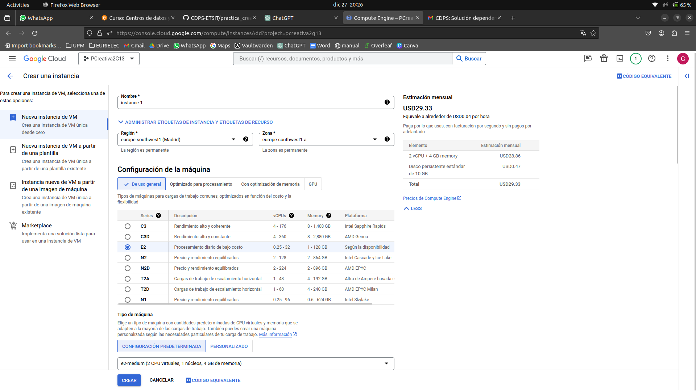
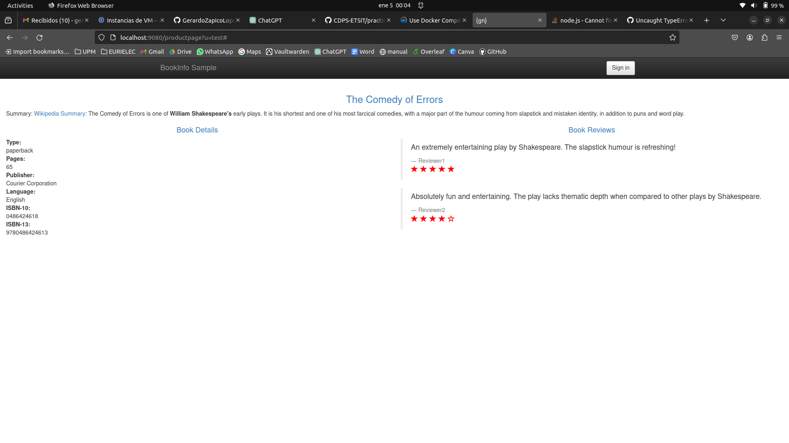
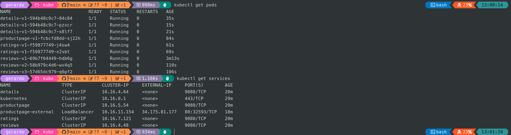

CDPS · 2023–2024 · Prácticas creativas
De máquinas virtuales a microservicios en Kubernetes
Automatización de infraestructura virtual con Python y evolución de una aplicación desde una máquina virtual monolítica hasta contenedores Docker, docker-compose y un clúster gestionado en Google Kubernetes Engine.
Se han dejado fuera las memorias rutinarias de laboratorio y se conservan las dos prácticas con mayor valor demostrable: automatización de máquinas virtuales y despliegue cloud/containerizado. El ZIP publicado excluye repositorios Git internos y artefactos generados.
Puntos destacados
Automatización y despliegue por capas.
Evolución
De infraestructura clásica a cloud native.
Virtualización
Automatización con Python y libvirt de máquinas, red, direccionamiento y monitorización.
VM en Google Cloud
Despliegue del monolito en una instancia Debian y automatización de instalación/configuración.
Docker + Compose
Separación en microservicios, Dockerfiles por servicio, volúmenes, puertos y variables de entorno.
Kubernetes
Deployments, Services, réplicas, exposición externa y operación del clúster con kubectl/gcloud.
Evidencias
Parte del despliegue.



Stack
Tecnologías empleadas
Entregables seleccionados